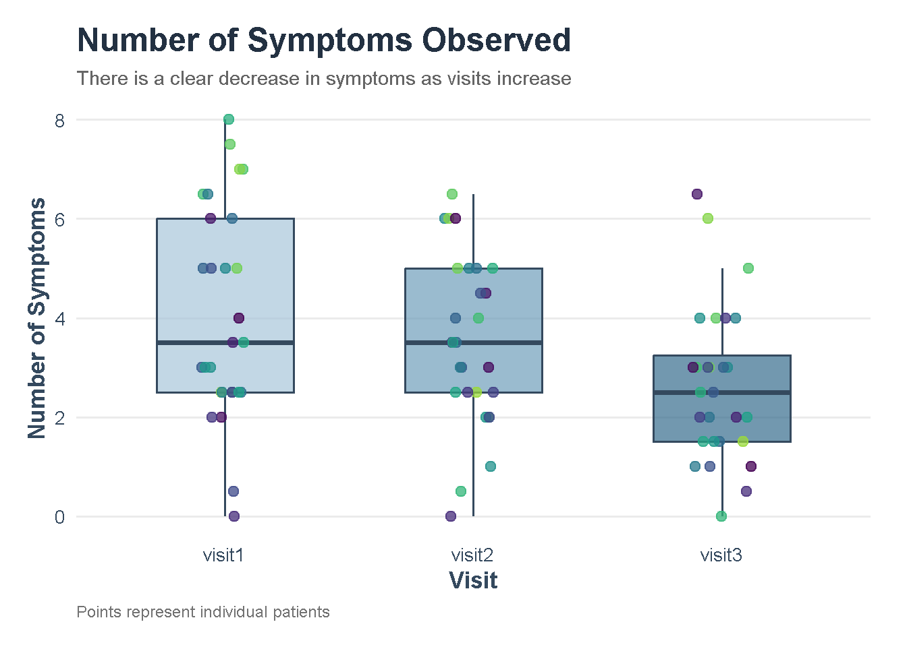

Fulvic Acid and the Symptoms of Peripheral Neuropathy
Peripheral Neuropathy Presentation Supplement
Code
# import librarieslibrary(tidyverse)library(mosaic)library(car)library(emmeans)library(pander)library(DT)library(scales)library(rstatix)# import data data <-read_csv("../data/neuropath_data.csv") %>%mutate(id =as.integer(as.factor(name))) %>%select(-name)
Code
# make data easier to work withdata_long <- data %>%select(id, visit1, visit2, visit3) %>%drop_na() %>%pivot_longer(cols = visit1:visit3,names_to ="visit",values_to ="value" ) %>%mutate(id =as.factor(id))
Introduction
This study investigated whether fulvic acid supplementation could reduce symptoms of peripheral neuropathy.
Fifty participants referred by endocrinology or pain specialists took 2,000 mg of fulvic acid twice daily for six months. Only 28 participants actually made it to the 6 month mark. Researchers assessed neuropathy symptoms through monthly physical examinations using the Michigan Neuropathy Screening Instrument (MNSI). The goal was to determine whether symptom severity changed across visits and whether fulvic acid showed potential as a treatment for peripheral neuropathy.
We used a repeated-measures ANOVA1 to determine whether the average number of neuropathy symptoms changed significantly across the three study visits. Because the same participants were evaluated at each visit a regular ANOVA would be inappropriate. However a repeated-measures ANOVA test accounts for the relationship between repeated measurements from the same individuals. We compared the mean symptom counts across visits 1, 2, and 3 to determine whether there was a statistically significant change over time.
View Data
Physical Assessment: Physical assessment data were collected by medical professionals using the Michigan Neuropathy Screening Instrument (MNSI) to evaluate participants’ physical signs of peripheral neuropathy. Measurements were recorded at three visits to examine changes in symptom severity over time.
IMPORTANT NOTE Much of this data was delivered in handwritten pages which were hard to decipher, meaning many of these values are potentially skewed by my ability to read the researcher’s handwriting.
ggplot(data_long, aes(x = visit, y = value)) +geom_boxplot(aes(fill = visit),alpha =0.7,width =0.55,outlier.shape =NA,color ="#34495E",linewidth =0.7,show.legend =FALSE ) +geom_point(aes(color = id),position =position_jitter(width =0.12, height =0),alpha =0.75,size =2.5 ) +scale_fill_manual(values =c("visit1"="#A8C5DA","visit2"="#6F9EBA","visit3"="#356B8C" ) ) +scale_color_viridis_d(option ="D", end =0.85) +labs(title ="Number of Symptoms Observed",subtitle ="There is a clear decrease in symptoms as visits increase",x ="Visit",y ="Number of Symptoms",color ="Patient ID",caption ="Points represent individual patients" ) +theme_minimal(base_size =13) +theme(plot.title =element_text(size =18, face ="bold", color ="#233142"),plot.subtitle =element_text(size =11, color ="gray40"),axis.title =element_text(face ="bold", color ="#34495E"),axis.text =element_text(color ="#34495E"),panel.grid.minor =element_blank(),panel.grid.major.x =element_blank(),legend.position ="none",legend.title =element_text(face ="bold"),plot.caption =element_text(color ="gray45", size =9, hjust =0),plot.margin =margin(15, 20, 15, 15) )

Code
datatable( data %>%select(id, everything()),caption ="Physical Assessment of Number of Symptoms",rownames =FALSE,options =list(pageLength =10,lengthMenu =c(10, 20, 40) ))
Code
# fun with favstatsrbind(visit1 =favstats(filter(data_long, visit =="visit1")$value),visit2 =favstats(filter(data_long, visit =="visit2")$value),visit3 =favstats(filter(data_long, visit =="visit3")$value),Total =favstats(data_long$value)) %>%select(-missing) %>%pander(caption ="Summary Statistics for Physical Assessment of number of symptoms")
Summary Statistics for Physical Assessment of number of symptoms
\[
H_a: \text{At Least One } \mu \text{ is different}
\]
Explained in English: Our default belief (the null hypothesis shown as \(H_0\)) is that the treatment does not affect the symptoms and therefore the average number of symptoms does not change across the three visits.
What we are trying to prove (The alternative hypothesis shown as \(H_a\)) is that the average number of symptoms differs for at least one visit, suggesting that the number of symptoms may change over time.
The Model
\[
\underbrace{Y_{ij}}_{\text{Symptoms for patient }i\text{ at visit }j}
=
\underbrace{\mu}_{\text{Overall mean}}
+
\underbrace{\alpha_j}_{\text{Effect of visit }j}
+
\underbrace{s_i}_{\text{Patient-specific effect}}
+
\underbrace{\epsilon_{ij}}_{\text{Random error}}
\]
Explanation of Model
\(Y_{ij}\): The number of symptoms a patient has at a specific visit.
\(\mu\): The average number of symptoms across the study.
\(\alpha_j\): How the visit (Visit 1, 2, or 3) affects the symptom count.
\(s_i\): Differences between patients, since some naturally have more symptoms than others.
\(\epsilon_{ij}\): Random variation or measurement error that the model cannot explain.
In simple terms: The model looks at how symptom counts change over the three visits while accounting for differences between patients and random variation. This helps us determine whether symptom counts changed significantly over time.
Analysis
Code
myaov <- data_long %>%anova_test(dv = value,wid = id,within = visit )get_anova_table(myaov) %>%pander(caption ="Results of the repeating value ANOVA")
Results of the repeating value ANOVA
Effect
DFn
DFd
F
p
p<.05
ges
visit
2
54
7.745
0.001
*
0.098
Here we do see that there is a statistically significant change in average number of symptoms observed as the visits progress. To better understand the result, see Comparisons.
Code
# Pairwise comparisons with Bonferroni adjustmentpairwise_results <- data_long %>%pairwise_t_test( value ~ visit,paired =TRUE,p.adjust.method ="bonferroni" ) %>%select(-any_of(c(".y.", "n1", "n2")))# Convert to wide format for paired Cohen's ddata_wide <- data_long %>%select(id, visit, value) %>%pivot_wider(names_from = visit,values_from = value )# Calculate paired Cohen's d for each comparisoncohen_paired <-function(x, y) { differences <- x - y differences <- differences[!is.na(differences)]if (length(differences) <2||sd(differences) ==0) {return(NA_real_) }mean(differences) /sd(differences)}effect_sizes <-tibble(group1 =c("visit1", "visit1", "visit2"),group2 =c("visit2", "visit3", "visit3"),cohens_d =c(cohen_paired(data_wide$visit1, data_wide$visit2),cohen_paired(data_wide$visit1, data_wide$visit3),cohen_paired(data_wide$visit2, data_wide$visit3) ))# Join Cohen's d to the pairwise test resultsfinal_results <- pairwise_results %>%left_join(effect_sizes, by =c("group1", "group2"))# Display combined resultspander( final_results,caption ="Pairwise Comparisons with Bonferroni-Adjusted P-Values and Cohen's d")
Pairwise Comparisons with Bonferroni-Adjusted P-Values and Cohen’s d
group1
group2
statistic
df
p
p.adj
p.adj.signif
cohens_d
visit1
visit2
1.626
27
0.1157
0.347
ns
0.3072
visit1
visit3
3.558
27
0.001406
0.004217
**
0.6724
visit2
visit3
2.477
27
0.01979
0.05937
ns
0.4682
Here we see that the only significant difference is between visits 1 and 3. These visits are 3 months apart, meaning the change in symptoms in the first 3 months is not statistically significant however the change over 6 months is statistically significant.
The paired-samples Cohen’s \(d_z\) values indicate a small effect between visits 1 and 2 (\(d = 0.31\)), a medium effect between visits 1 and 3 (\(d = 0.67\)), and a small-to-medium effect between visits 2 and 3 (\(d = 0.47\)).
These results suggest that the change in symptoms was greatest over the full six-month period, with a moderate standardized effect. Although the change between visits 2 and 3 was not statistically significant after Bonferroni adjustment, its effect size suggests a potentially meaningful change that may warrant further investigation.
Code
# Check outliers at each visitdata_long %>%group_by(visit) %>%identify_outliers(value) %>%pander(caption ="List of outliers")
Shapiro-Wilk Test Results for Pairwise Visit Differences
comparison
statistic
p.value
method
Visit 1 - Visit 2
0.9743
0.7001
Shapiro-Wilk normality test
Visit 1 - Visit 3
0.977
0.773
Shapiro-Wilk normality test
Visit 2 - Visit 3
0.9721
0.6386
Shapiro-Wilk normality test
The Shapiro–Wilk tests were non-significant for all pairwise differences (\(p > .05\)), indicating no evidence of a violation of normality. Two potential outliers were identified at visit 3, but neither was classified as extreme and should be investigated rather than automatically removed.
Code
# Mauchly's test of sphericitymyaov$`Mauchly's Test for Sphericity`%>%pander(caption ="Mauchly's Test For Sphericity")
Mauchly’s Test For Sphericity
Effect
W
p
p<.05
visit
0.957
0.567
Mauchly’s test was non-significant (\(W = 0.957, p = .567\)), indicating that the assumption of sphericity was met. Therefore, no sphericity correction was necessary for the repeated-measures ANOVA.